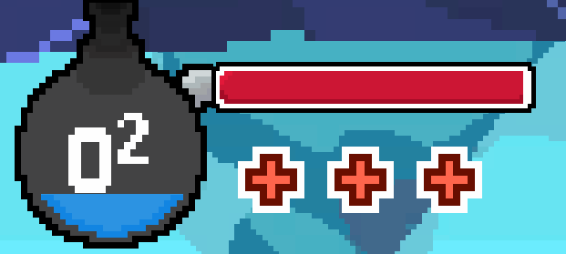
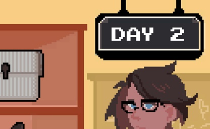
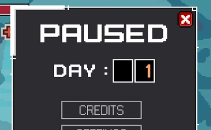
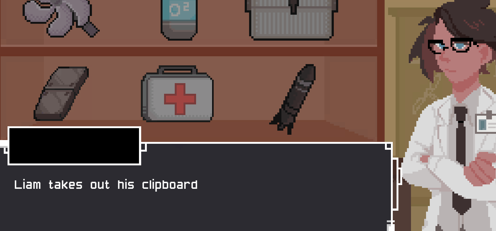

Introduction
A team-of-7 game project about managing resources to upgrade a diver of NaMSA's submarine and dive deeper to the bottom of the mariana trench. Created within 3-4 months, I was tasked as one of the generalist programmers.
Platform
Windows
Engine
Unity2D
Genre
- Action-Adventure
- Resource Management
Official Site
My Assigned Tasks
- Programmed a progressive oxygen tank mechanic. Similar to a timer countdown feature, every second invoked while players are in the depths of the ocean will slowly decrease the oxygen amount. Once it reaches zero, the submarine will take damage and must swim back to the surface. The variables used are player prefs to sustain the current numbers for both oxygen and submarine health in all scenes. As the upgradable items are scriptable objects, these code blocks were written to compliment the variables in said scriptable object.

if (PlayerPrefs.GetFloat("oxygenSupply") > 0)
{
oxygenSupply = PlayerPrefs.GetFloat("oxygenSupply");
}
if (oxygenSupply > 0)
{
InvokeRepeating("TankFall", oxygenDepletionRate, oxygenDepletionRate);
}
void TankFall()
{
oxygenSupply -= oxygenDepletionAmount;
}
.... // event commands related to an upgradable item


